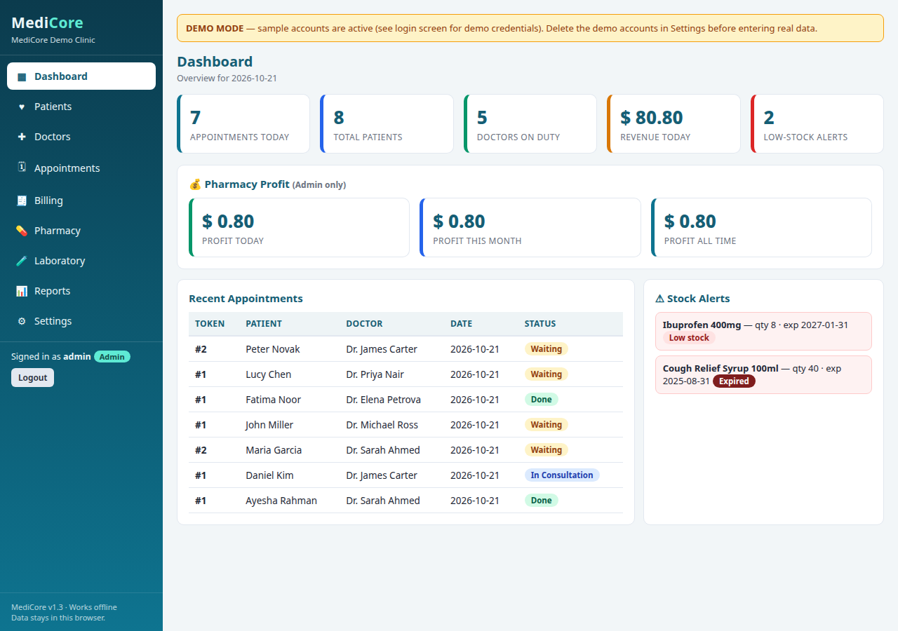
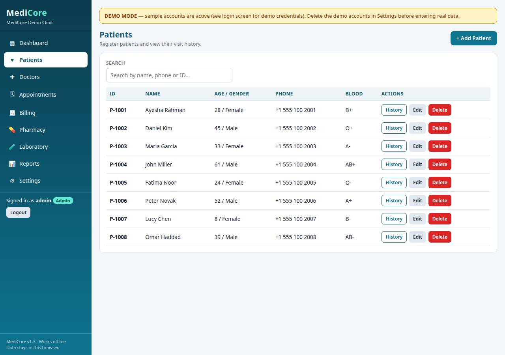
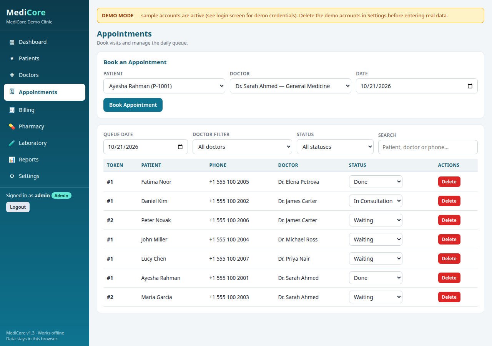
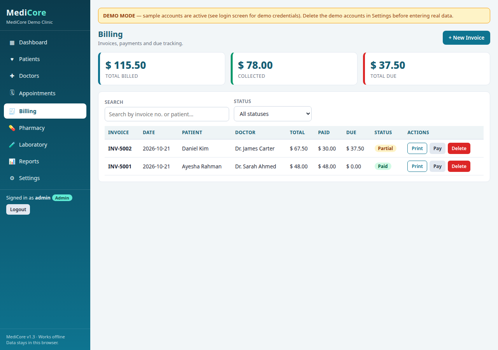
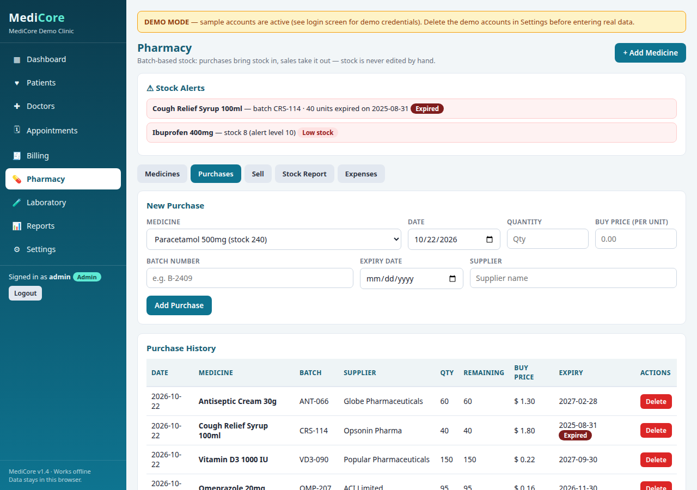
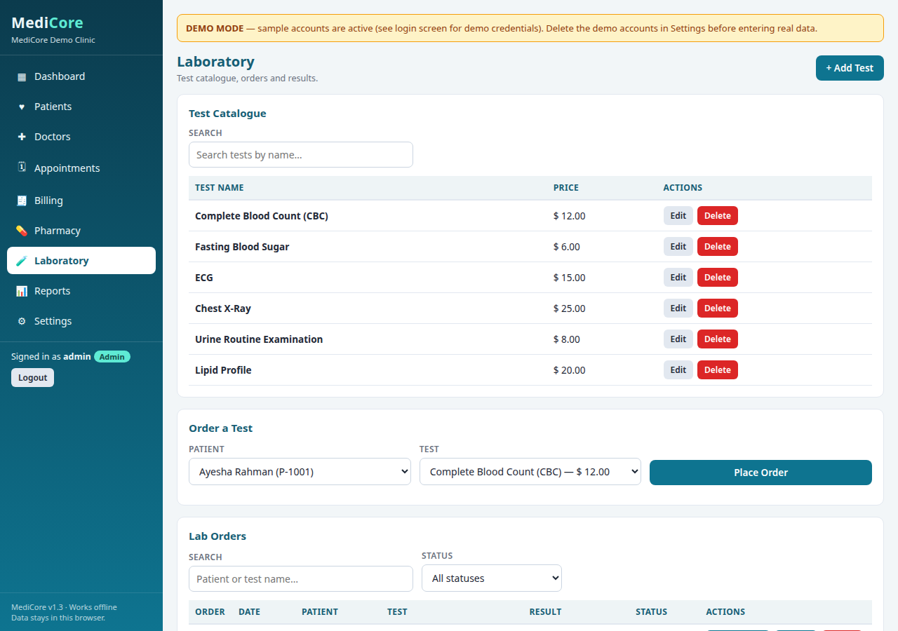
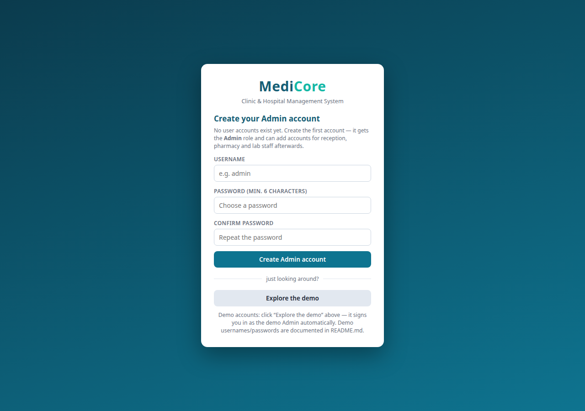

Clinic & Hospital Management System
Run a small or mid-sized clinic in one shared system: patients, doctors, appointments, billing, pharmacy and laboratory — with every counter working on the same live records.
Note: the first visit can take about a minute because the free demo wakes from sleep. On the sign-in screen, use the Demo login buttons to try a role in one click.

What MediCore is
MediCore is a client-server clinic and hospital management system. Reception, pharmacy and laboratory staff sign in at the same time and work on one shared, live database, instead of records that live in a single browser on a single device. Clinic data is stored on the server in PostgreSQL, and the rules that decide who may change what are enforced on the server.
It covers the daily clinic workflow end to end: register a patient, book an appointment with a token, raise a bill and record payments, dispense medicines from batch stock, order and report lab tests, and review collections and pharmacy profit in reports.
Every module, in one place
Dashboard
Today's appointments, patient and doctor counts, revenue, and — for Admin only — pharmacy profit, plus expiry and low-stock alerts.
Patients
Register patients and view their visit history, with search across the list.

Doctors
A doctor directory with departments, qualifications and consultation fees, used when booking appointments.
Appointments
Book appointments with an automatic per-doctor daily token number, and follow the queue: Waiting, In Consultation, Done or Cancelled.

Billing
Invoices with consultation fees and line items, percentage discounts and partial payments, with paid, partial and due status.

Pharmacy
Medicine master data, batch purchase entries, FEFO dispensing, a stock report with total stock value, expenses, and profit that nets expenses. Stock is computed from purchases minus dispensing — it is never typed in by hand.

Laboratory
A test catalogue, lab orders and results, with order status tracking.

Reports & Settings
Collection reports by period, appointments by doctor, and pharmacy figures. Settings hold the clinic profile and currency, and Admin manages user accounts and can download a full data export.
For every role
Each person signs in and sees the work their role allows. The same permission rules are also checked on the server, so hiding a button in the browser never grants access by itself.
Admin
Everything, including users, settings, reports and pharmacy profit.
Receptionist
Patients, appointments, billing and lab orders.
Pharmacist
Medicines, purchase batches and dispensing.
Lab Technician
Lab tests and results, and lab orders.
Security & control
- Passwords are hashed with bcrypt on the server; plain passwords are never stored.
- Sign-in returns a token that expires after 8 hours by default, and sign-in attempts are rate-limited.
- Every change to records is checked against the role permission rules on the server.
- Sign-ins and user-management actions are written to an audit log viewable by Admin.
- Pharmacy buy prices and cost-derived figures are returned only to Admin and Pharmacist accounts.
- Demo accounts are for evaluation only — delete them before using MediCore with real patient data.
Technology
Node.js with Express, PostgreSQL, JSON Web Tokens for sessions, bcrypt for password hashing, and Docker Compose deployment. Configuration comes from environment variables; there is no fallback signing secret — the server refuses to start without a strong secret.
What is included
- Full source code for the server and the browser frontend
- Database schema and a demo clinic dataset with four demo accounts
- A setup guide covering bare-server and Docker Compose installation
- Documentation of the data model, roles and pharmacy batch rules
Product tour — every screen, ready today

Try MediCore with the demo clinic
Open the live demo, pick a role on the sign-in screen, and walk through a full clinic day — no setup needed.
Note: the first visit can take about a minute because the free demo wakes from sleep.